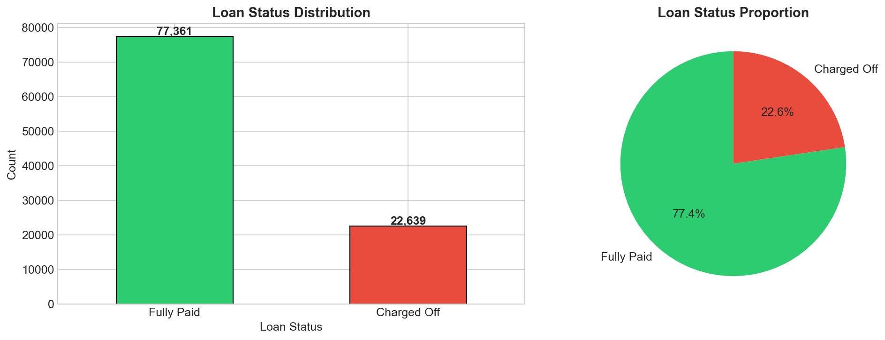
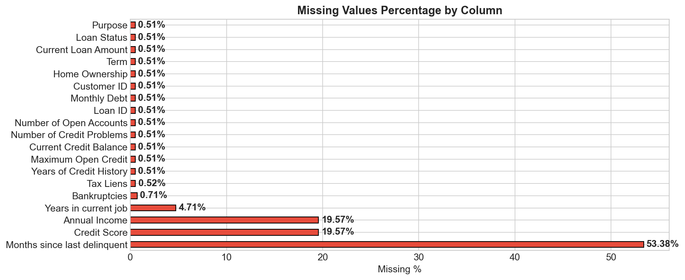
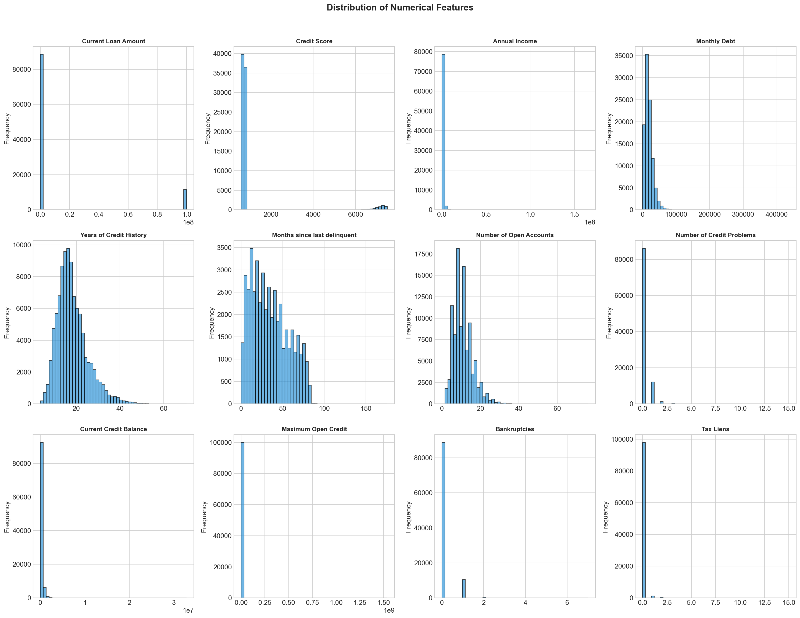
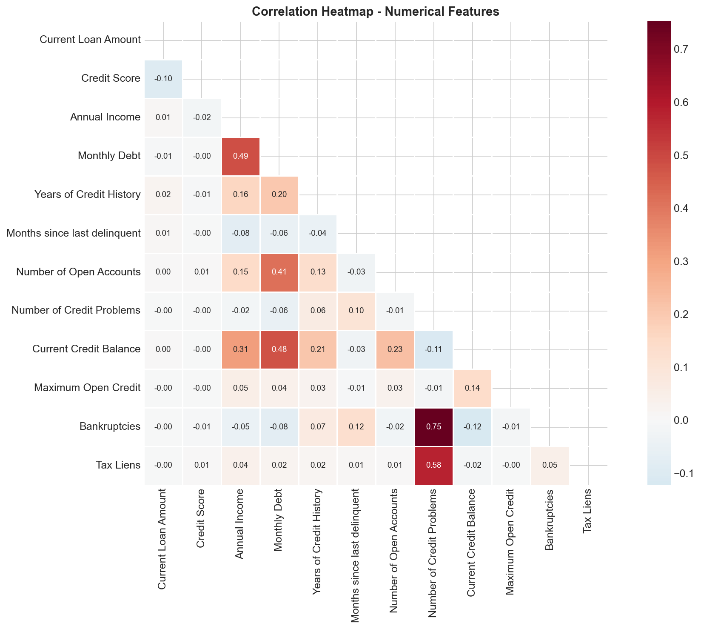
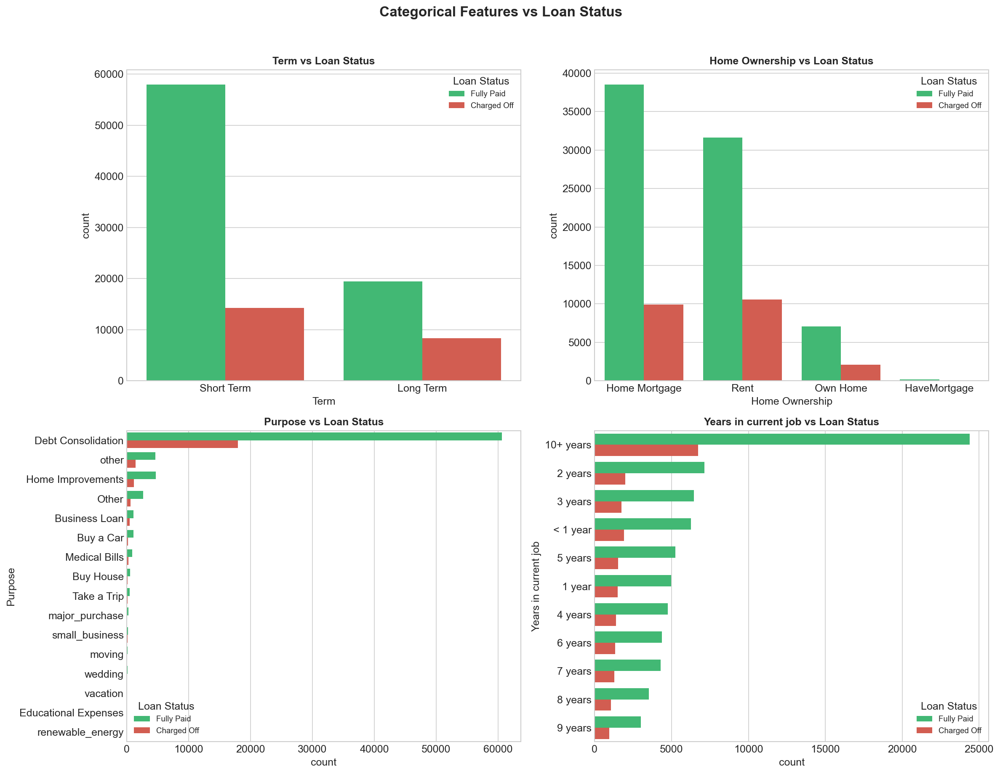
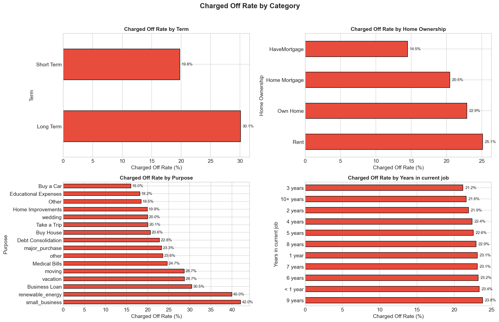
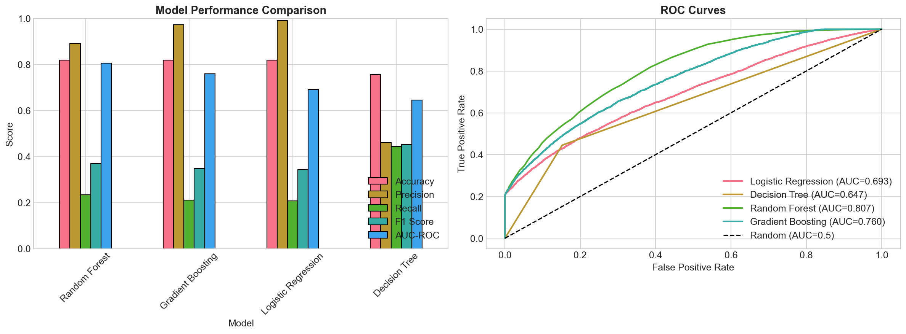
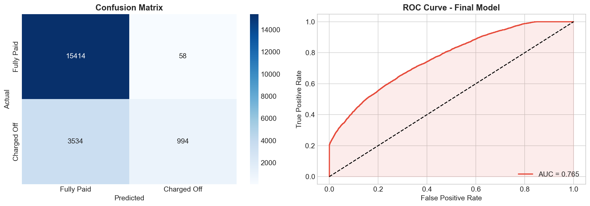
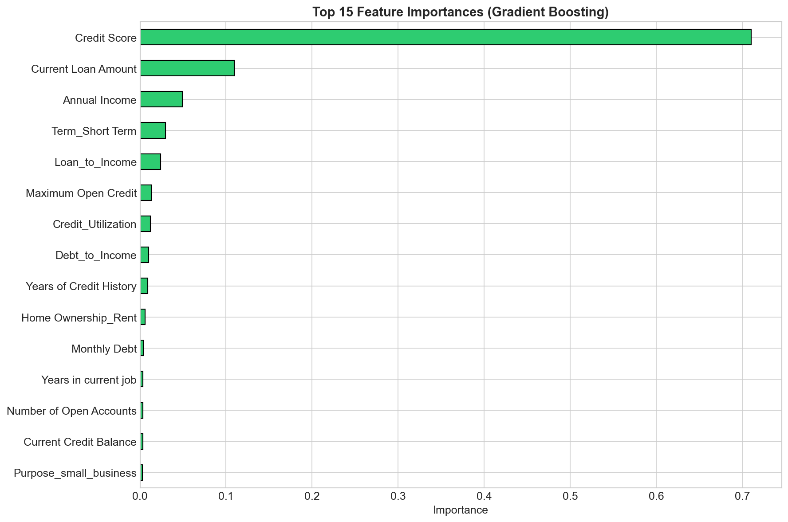

การพยากรณ์สถานะการชำระหนี้ของลูกค้าธนาคาร ด้วย Machine Learning เพื่อลดความเสี่ยงด้านสินเชื่อ
🔮 ลองทำนายเลยที่มาของ Project และทำไมเรื่องนี้จึงสำคัญ
ในอุตสาหกรรมการเงิน การประเมินความเสี่ยงด้านสินเชื่อ (Credit Risk Assessment) เป็นหนึ่งในงานที่สำคัญที่สุด ธนาคารต้องตัดสินใจอยู่ตลอดเวลาว่าจะปล่อยสินเชื่อให้ลูกค้ารายใด และลูกค้ารายใดมีโอกาส ผิดนัดชำระหนี้ (Charged Off) สูง
สร้าง Machine Learning Model ที่สามารถ คาดการณ์ได้ว่าลูกค้ารายใดจะชำระหนี้ครบ (Fully Paid) หรือ ผิดนัดชำระ (Charged Off) เพื่อช่วยธนาคารลดความเสี่ยงและตัดสินใจอย่างมีข้อมูลรองรับ
เริ่มต้นจากคำถามที่ว่า: "เราสามารถใช้ข้อมูลประวัติเครดิตของลูกค้า เพื่อทำนายพฤติกรรมการชำระหนี้ในอนาคตได้หรือไม่?" โดยมีแนวคิดว่า ถ้าเรามีข้อมูล Credit Score, Annual Income, Debt-to-Income Ratio และข้อมูลอื่นๆ ของลูกค้า เราน่าจะสร้าง model ที่แม่นยำพอสมควรได้ วิธีการคือเริ่มจาก EDA เพื่อเข้าใจข้อมูล จากนั้น clean data, สร้าง features ใหม่ และทดลอง models หลายตัวเพื่อเปรียบเทียบ
รายละเอียดของ Dataset ที่ใช้ในการวิเคราะห์
100,514 rows × 19 columns
มี label Loan Status สำหรับ training
ประกอบด้วยข้อมูลส่วนตัว สินเชื่อ และประวัติเครดิต
10,353 rows × 18 columns
ไม่มี label (ใช้สำหรับ prediction)
โครงสร้าง columns เหมือน train (ยกเว้น target)
| Feature | Type | Description |
|---|---|---|
| Current Loan Amount | Numerical | จำนวนเงินกู้ปัจจุบัน |
| Term | Categorical | ระยะเวลาสินเชื่อ (Short/Long Term) |
| Credit Score | Numerical | คะแนนเครดิต |
| Annual Income | Numerical | รายได้ต่อปี |
| Years in current job | Categorical | อายุงานปัจจุบัน |
| Home Ownership | Categorical | สถานะที่อยู่อาศัย |
| Purpose | Categorical | วัตถุประสงค์ในการกู้ |
| Monthly Debt | Numerical | หนี้ต่อเดือน |
| Years of Credit History | Numerical | อายุประวัติเครดิต (ปี) |
| Number of Open Accounts | Numerical | จำนวนบัญชีที่เปิดอยู่ |
| Number of Credit Problems | Numerical | จำนวนปัญหาด้านเครดิต |
| Current Credit Balance | Numerical | ยอดหนี้คงค้าง |
| Maximum Open Credit | Numerical | วงเงินเครดิตสูงสุด |
| Bankruptcies | Numerical | จำนวนครั้งที่ล้มละลาย |
| Tax Liens | Numerical | จำนวน Tax Liens |
ผลจากการสำรวจข้อมูลเบื้องต้น

สัดส่วน Fully Paid vs Charged Off — ข้อมูลมี imbalance เล็กน้อย โดย Fully Paid มีจำนวนมากกว่า

เปอร์เซ็นต์ Missing Values แต่ละ column — Months since last delinquent มี missing สูงสุด

Distribution ของ numerical features — พบค่าผิดปกติ 99,999,999 ใน Current Loan Amount

Correlation Matrix แสดงความสัมพันธ์ระหว่าง numerical features

Categorical features แยกตาม Loan Status

อัตรา Charged Off แยกตาม categories ต่างๆ
ขั้นตอนและวิธีการที่ใช้ในการวิเคราะห์
แทนค่า 99,999,999 ด้วย NaN, จัดการ missing values ด้วย median imputation, แปลง 'Years in current job' จาก text เป็น numeric, และ drop ID columns ที่ไม่จำเป็น
สร้าง features ใหม่: Debt-to-Income Ratio (Monthly Debt / Monthly Income), Credit Utilization (Current Balance / Max Credit), และ Loan-to-Income Ratio
One-Hot Encoding สำหรับ categorical features (Term, Home Ownership, Purpose) และ StandardScaler สำหรับ Logistic Regression
ทดลอง 4 models: Logistic Regression, Decision Tree, Random Forest, Gradient Boosting พร้อม stratified 80/20 train-validation split
ใช้ GridSearchCV ปรับ hyperparameters ของ best model (Gradient Boosting) ค้นหา n_estimators, max_depth, learning_rate ที่ดีที่สุด
ประเมินด้วย Confusion Matrix, Classification Report, ROC Curve แล้ว predict test set
ผลลัพธ์จากการเปรียบเทียบ Models
* Final Model: Gradient Boosting (n_estimators=200, max_depth=3, learning_rate=0.1)

เปรียบเทียบ performance ของแต่ละ model และ ROC Curves

Confusion Matrix และ ROC Curve ของ Final Model

Top 15 Feature Importances จาก Gradient Boosting Model
สิ่งที่ค้นพบจากการวิเคราะห์และข้อเสนอแนะเชิง Business
ลูกค้าที่มี Credit Score ต่ำ มีโอกาสผิดนัดชำระหนี้สูงกว่าอย่างชัดเจน ธนาคารควรให้ความสำคัญกับ Credit Score ในการ screening ลูกค้า
ลูกค้าที่มี Monthly Debt เทียบกับ Income สูง มีแนวโน้มที่จะ default มากกว่า ควรตั้ง threshold สำหรับ Debt-to-Income ratio ที่เหมาะสม
ลูกค้าที่เป็นเจ้าของบ้าน (Own Home) มีอัตรา Charged Off ต่ำกว่าลูกค้าที่เช่า (Rent) ข้อมูลนี้สามารถนำไปใช้เป็นปัจจัยเสริมในการประเมิน
สินเชื่อระยะสั้นมีโอกาส Charged Off น้อยกว่าสินเชื่อระยะยาว ธนาคารควรพิจารณาระยะเวลาสินเชื่อเป็นปัจจัยในการประเมินความเสี่ยง
พบค่า 99,999,999 ใน Current Loan Amount ซึ่งเป็น placeholder สำหรับ missing values และมี missing values ค่อนข้างมากใน Credit Score, Annual Income ระบบจัดเก็บข้อมูลควรได้รับการปรับปรุง
• ทดลองเพิ่มเติมด้วย XGBoost, LightGBM หรือ Neural Networks
• เพิ่ม Feature Engineering จาก domain knowledge ของผู้เชี่ยวชาญด้านการเงิน
• ใช้ techniques อย่าง SMOTE เพื่อจัดการ class imbalance
• สร้าง real-time prediction API สำหรับใช้งานจริง